Summary
The main goal of Lab 3 was to work on the audio aspect of "The Robot". The functionality of the audio aspect of "The Robot" would be that during the final demo, "The Robot" would hear a melody that is being played and upon detecting a spectific trigger frequency, this is when "The Robot" knows it can start navigating through the maze.
The workload of the Lab 3 was divided into two weeks:
In the first week, my lab partner and I focused on using LTSpice, simulating lowpass, highpass and bandpass passive filiters. We also focused on building the basic microphone circuit and testing it with MATLAB and the Nano. We built the amplifier microphone circuit and tested it with MATLAB and the Nano. Finally, we implemented a filiter, characterized it and compared it frequency response to our simulation result.
In the second week, my lab partner and I tested our amplified microphone circuit only on the Nano (FFT on the Nano). We also characterize our circuit and adapted the code for the Final Demo.
In depth descriptions of what we did in each week is included in the picture descriptions.
Pictures
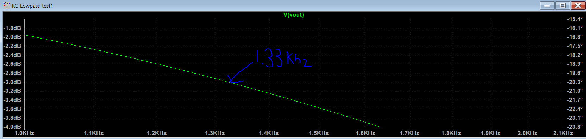Figure 1. This was a simulation of a low pass filter using R = 1.2 kOhm and C = 0.1 uF in LTI Space
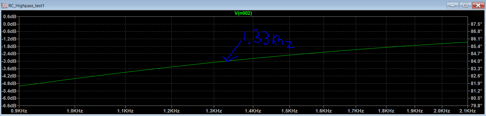Figure 2. This was a simulation of a high pass filter using R = 1.2 kOhm and C = 0.1 uF.
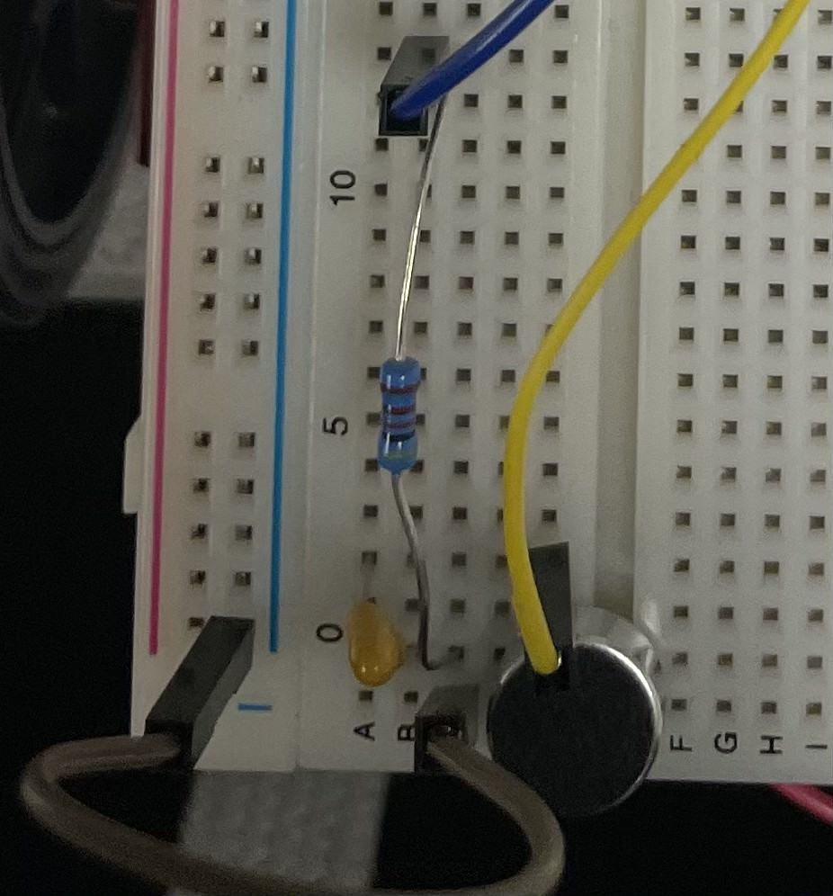Figure 3. This is a picture of the Initial simple microphone circuit we built using a resistor value 4.02 kOhm and capacitor value of 0.22 uF , capacitor and the arduino. The green wire connected to the microphone which is the round shaped object is connected to ground. The other terminal of the microphone is connected to the resistor and positive end of the capacitor. The other end of the resistor was connected to the green wire which is hooked up to a 5V powered by the Arduino Nano Every. The other end of the capacitor is connected to the yellow wire which is hooked up to the Analog pin of the Arduino Nano Every.
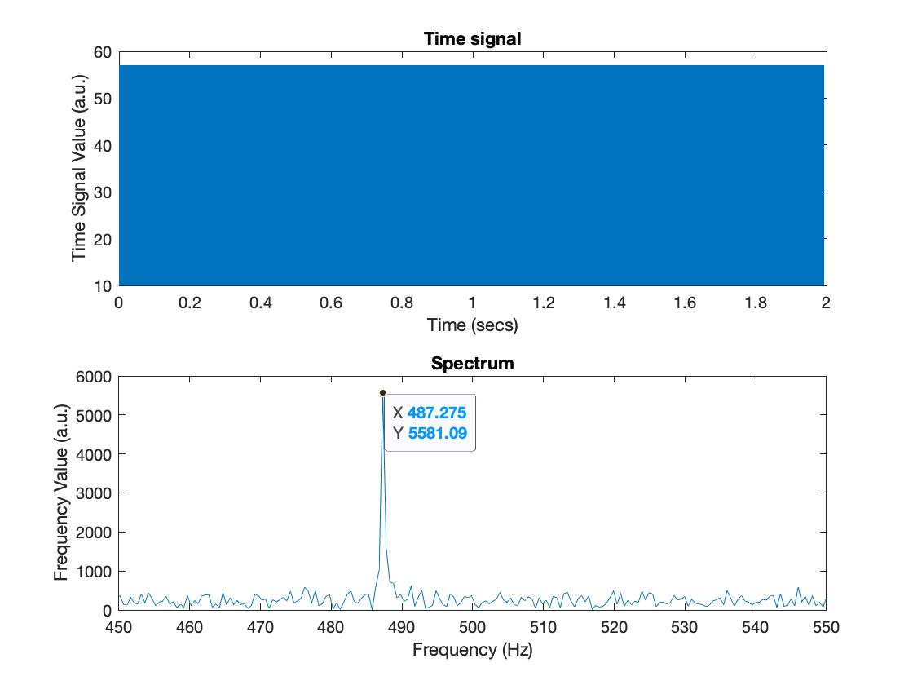Figure 4. My lab partner and I created an arduino code and a matlab code. The arduino code job was to receive sound from our computer that was generated from MATLAB and sound would be picked up by the arduino through the arduino code. The MATLAB code job, besides generating sound, was to get the data obtain from the arduino and transfer over to matlab and plot the data nicely. This is the graph that we generated from MATLAB from passing a 500 frequency Hz sound into our basic microphone circuit. We can see a peak at around 487 Hz which is around 500 Hz of the input we had on the second graph shown in the picutre. In the first graph, it shows the duration of time we played the 500 Hz frequency from MATLAB through our computer speaker.
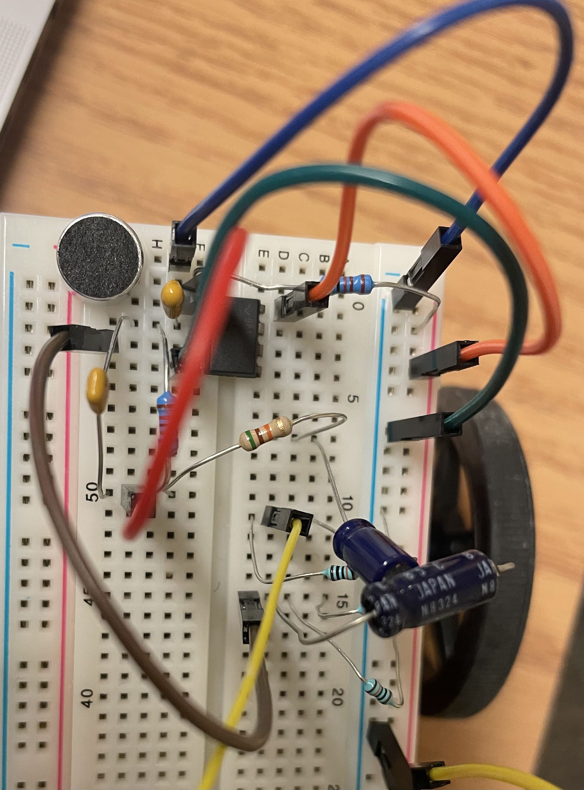Figure 5. This is the augmented microphone circuit that has the amplication circuit.
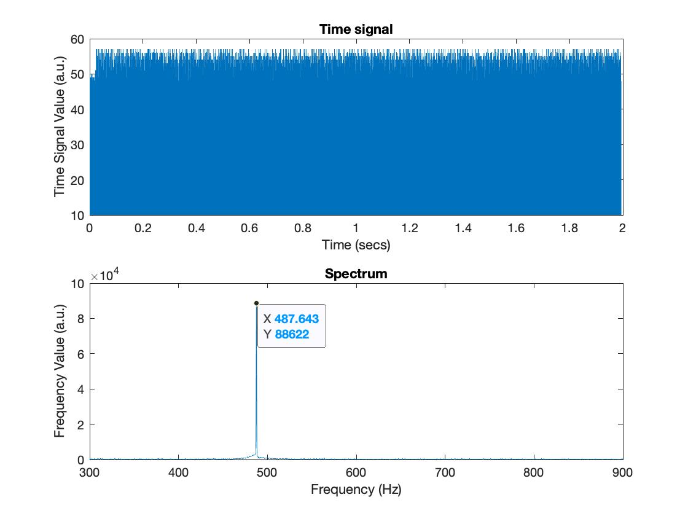Figire 6. Similar to Figure 4 description but except now with an augmented microphone circuit. The top graph represents the duration in which the sound was played. The bottom graph represents t the frequency data it picked up from the sound played through MATLAB.
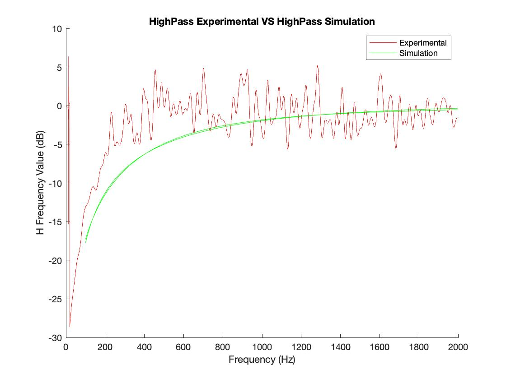Figure 7. This is the (SMOOTH) HighPass Experiement and HighPass Simulation graph
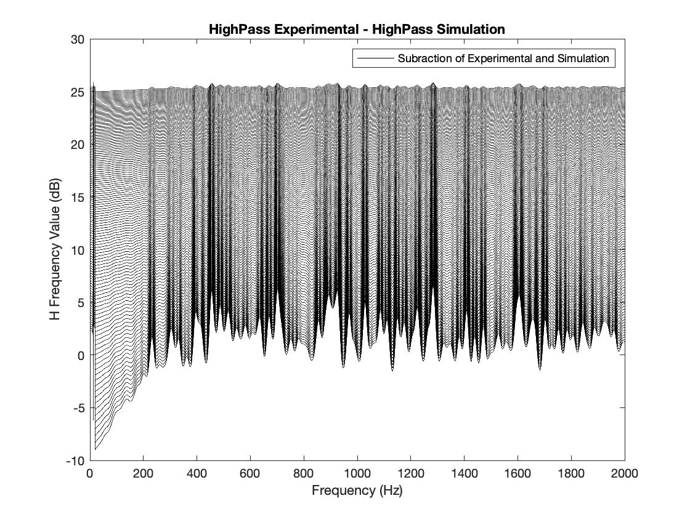Figure 8. This is the plot of the difference between the simulated and experimental filter response, HighPassExperimental- HighPassSimulation.
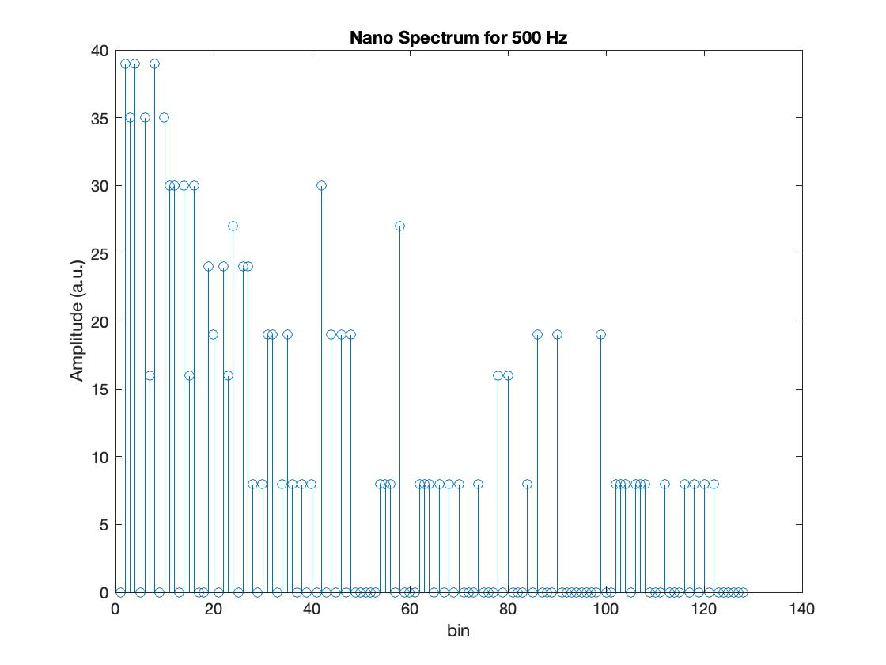Figure 9. Spectrum Obtained with the Nano for a sound frequency of 500 Hz
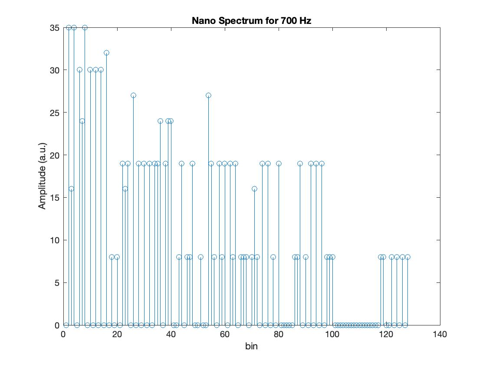Figure 10. Spectrum Obtained with the Nano for a sound frequency of 700 Hz
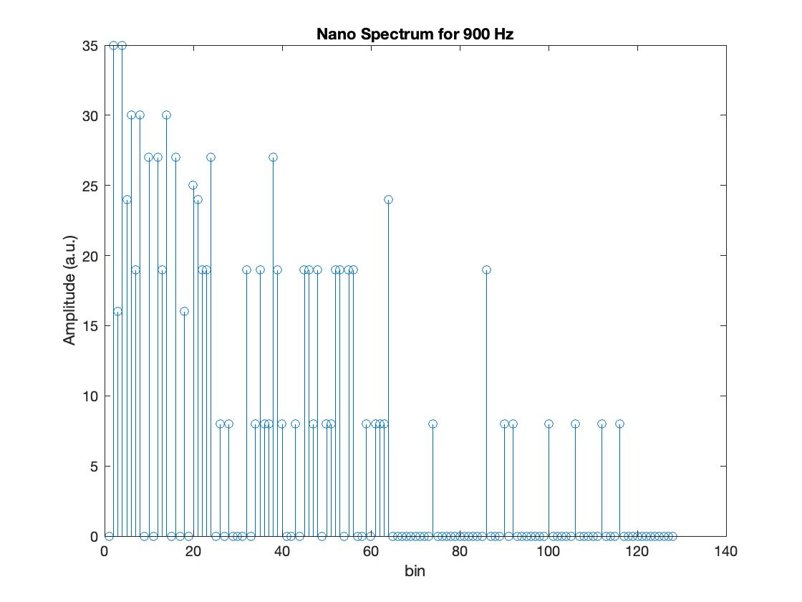Figure 11. Spectrum Obtained with the Nano for a sound frequency of 900 Hz
Reflection
I believe this lab was the longest lab by far and also one of the interesting labs I worked with by far. Dealing with especially the coding components was a struggle because sometimes the code won't run or just would take too long to run and you wouldn't be too sure where the error was really at and what you did wrong. However, I enjoyed the having the experience of the process of giving "The Robot" audio quality.